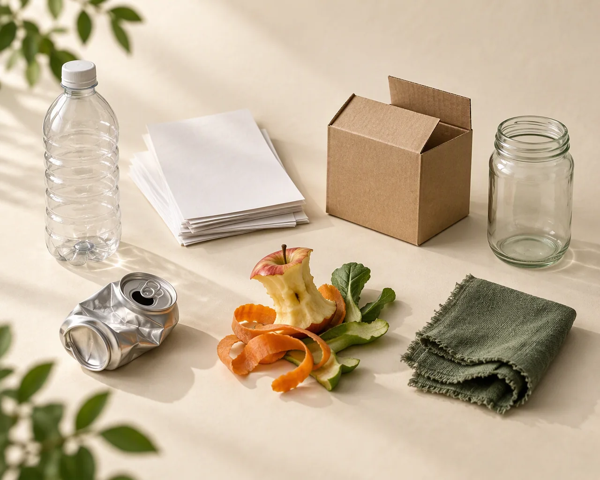

Instant classification
A MobileNetV2 transfer-learning model and a from-scratch CNN classify an uploaded photo into one of seven waste categories.
Upload a photo of a waste item. EcoVision identifies what it is, shows the evidence behind the decision with Grad-CAM, and explains how to dispose of it responsibly.

A complete loop: classify, understand, act, and improve the model with feedback.
A MobileNetV2 transfer-learning model and a from-scratch CNN classify an uploaded photo into one of seven waste categories.
Grad-CAM highlights the image regions that drove the prediction, so you can judge whether the model focused on the object.
Each result includes a typical bin, preparation steps, cautions, and the environmental reason to sort correctly.
Tell EcoVision when it is wrong and what the correct class is. Feedback is stored in SQLite and flagged as unverified.
Track total scans, category distribution, confidence, feedback agreement, and a seven-day activity trend.
Uploads are validated, re-encoded, and stored only as derived 512 px thumbnails and explanation images.
No account, no setup in the browser. The heavy lifting happens in the Python API.
Drag and drop, or choose a file. Images must be JPEG, PNG, or WebP and at most 8 MB.
See the predicted class, confidence, top-3 alternatives, and a Grad-CAM heatmap overlay.
Follow the recycling guidance, then confirm the prediction or send a correction to the feedback log.
Start with one item. EcoVision will tell you what it thinks it is and why.